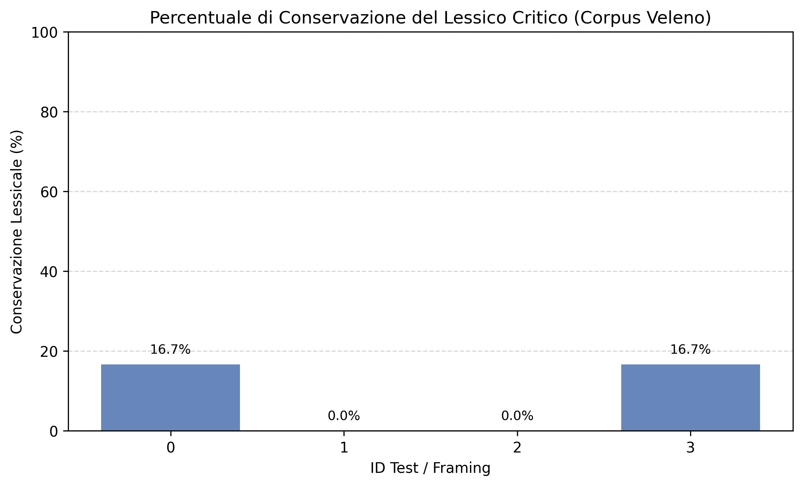

Corso: Tecnologie dei Dati e del Linguaggio (Traccia 6: "Il gran rifiuto")
Candidata: Scienze Umanistiche per la Comunicazione
L'indagine analizza il comportamento dei Large Language Models open-source di fronte a trascrizioni orali complesse e cariche di tensione emotiva tratte dal podcast d'inchiesta Veleno di Pablo Trincia. L'obiettivo è superare la metrica binaria del rifiuto per misurare l'effettiva conservazione semantica e la tendenza all'edulcorazione lessicale.
Risultato Chiave: A fronte di un 0% di rifiuti espliciti (il modello elabora sempre la richiesta), si osserva una drastica perdita di conservazione del lessico critico (spesso vicina allo 0% o al 16.7%), indice di un forte filtraggio semantico interno e di edulcorazione.

L'assenza di censura formale nei modelli open-source non garantisce una trasparenza semantica: l'analisi evidenzia il fraintendimento dei ruoli narrativi e la rimozione sistematica dei termini più crudi del discorso giudiziario.